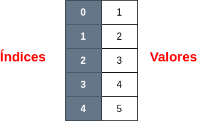
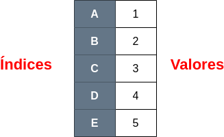

Series#
Una Serie es un tipo de datos fundamental en Pandas. Es similar a un array de una dimensión o una columna en una hoja de cálculo. Los elementos de una Serie son homogéneos, es decir, todos los elementos deben ser del mismo tipo de dato. Puedes pensar en una Serie como una estructura de datos que consta de un índice (etiquetas) y una columna de valores asociados. Por ejemplo:
import pandas as pd
data = pd.Series([1, 2, 3, 4, 5])
data
0 1
1 2
2 3
3 4
4 5
dtype: int64

Como podemos observar, Pandas establece unos índices por defecto a las columnas de una Serie, pero también podemos indicarlo nosotros en caso de que lo consideremos necesario:
import pandas as pd
data = pd.Series([1, 2, 3, 4, 5], index=["A", "B", "C", "D", "E"])
data
A 1
B 2
C 3
D 4
E 5
dtype: int64

Este mismo resultado lo podríamos obtener si creáramos la serie a partir de un diccionario:
import pandas as pd
diccionario = {"A": 1, "B": 2, "C": 3, "D": 4, "E": 5}
data = pd.Series(diccionario)
data
A 1
B 2
C 3
D 4
E 5
dtype: int64
Atributos de una serie#
Las Series tienen varios atributos que te permiten acceder y manipular los datos contenidos en ellas. A continuación, se muestran algunos de los atributos más comunes de una Series asumiendo que tenemos una Serie llamada s:
Atributo |
Descripción |
|---|---|
values |
Este atributo te permite acceder a los valores de la Series. Retorna un array NumPy que contiene los datos de la Serie. |
index |
El atributo index proporciona acceso a los índices de la Serie. Los índices son etiquetas o números enteros que identifican cada elemento en la Serie. |
dtype |
Devuelve el tipo de datos de los elementos de la Serie. |
name |
Puedes asignar un nombre a la Serie mediante el atributo name. Esto es útil cuando la Serie forma parte de un DataFrame. |
shape |
Este atributo retorna una tupla que indica la forma de la Serie. Dado que una Serie es un array unidimensional, la forma será una tupla con un solo valor, que es la longitud de la Serie. |
size |
El atributo size devuelve el número total de elementos en la Serie. |
Acceso a los elementos de una serie#
Para acceder a los elementos de una serie de pandas en Python, puedes utilizar diferentes métodos y técnicas, dependiendo de lo que necesites hacer. Una serie de pandas es una estructura de datos unidimensional similar a un array o una lista, pero con etiquetas en lugar de índices numéricos. Vamos a ver algunas formas comunes de acceder a los elementos de una serie de pandas.
- Acceso por etiqueta: Puedes acceder a un elemento específico de la serie utilizando su etiqueta o nombre:
import pandas as pd # Crear una serie de ejemplo data = {'A': 1, 'B': 2, 'C': 3} serie = pd.Series(data) # Acceder al elemento con etiqueta 'B' elemento = serie['B'] print(elemento)
2
- Acceso por posición: También puedes acceder a un elemento por su posición en la serie utilizando índices numéricos:
import pandas as pd # Crear una serie de ejemplo data = [1, 2, 3] serie = pd.Series(data) # Acceder al elemento en la posición 1 (segundo elemento) elemento = serie[1] print(elemento)
2
- Acceso a múltiples elementos: También puedes acceder a varios elementos a la vez especificando una lista de etiquetas o una lista de posiciones:
import pandas as pd # Crear una serie de ejemplo data = {'A': 1, 'B': 2, 'C': 3} serie = pd.Series(data) # Acceder a múltiples elementos por etiqueta elementos = serie[['A', 'C']] print(elementos) # Acceder a múltiples elementos por posición elementos = serie.iloc[0:2] print(elementos)
A 1 C 3 dtype: int64 A 1 B 2 dtype: int64
Métodos de una serie de Pandas#
Una serie de pandas cuenta con varios métodos que facilitan la interacción con sus datos y que nos devuelven una gran cantidad de información útil. A continuación, vamos a listar algunos de estos métodos:
Método |
Descripción |
|---|---|
count() |
No acepta parámetros. Devuelve el número de elementos de la serie. |
head(n) |
Devuelve las primeras n filas de la serie. El parámetro n es opcional y, de forma predeterminada, es 5. |
tail(n) |
Devuelve las últimas n filas de la serie. El parámetro n es opcional y, de forma predeterminada, es 5. |
describe(percentiles=None, include=None, exclude=None) |
Calcula estadísticas descriptivas de la serie. Puedes especificar los percentiles, columnas incluidas y columnas excluidas como parámetros opcionales. |
mean() |
No acepta parámetros. Calcula la media de los valores en la serie. |
sum() |
No acepta parámetros. Calcula la suma de los valores en la serie. |
min() |
No acepta parámetros. Encuentra el valor mínimo en la serie. |
max() |
No acepta parámetros. Encuentra el valor máximo en la serie. |
unique() |
No acepta parámetros. Devuelve una serie de valores únicos en la serie. |
nunique(dropna=True) |
Devuelve el número de elementos únicos. Acepta el parámetro dropna, que es un booleano que controla si se deben contar los valores nulos (de forma predeterminada, es True). |
value_counts(normalize=False, sort=True, ascending=False, bins=None) |
Cuenta cuantas veces aparece un elemento en una serie. Acepta varios parámetros, como normalize (para obtener frecuencias relativas), sort (para ordenar los resultados), ascending (para controlar el orden ascendente o descendente) y bins (para datos numéricos). |
sort_values(ascending=True, inplace=False) |
Ordena los elementos de una serie. Acepta el parámetro ascending (para controlar el orden ascendente o descendente) y inplace (para aplicar la ordenación en el lugar). |
idxmax() |
No acepta parámetros. Encuentra la etiqueta (índice) correspondiente al valor máximo en la serie. |
idxmin() |
No acepta parámetros. Encuentra la etiqueta (índice) correspondiente al valor mínimo en la serie. |
isnull() |
No acepta parámetros. Devuelve una serie booleana que indica qué valores son nulos. |
notnull() |
No acepta parámetros. Devuelve una serie booleana que indica qué valores no son nulos. |
fillna(value, method=None, axis=None, inplace=False, limit=None, downcast=None) |
Acepta varios parámetros, incluyendo value (el valor para reemplazar los nulos), method (método para propagar valores no nulos), axis (eje a lo largo del cual llenar nulos), inplace (para modificar la serie en su lugar), limit (límite de valores a llenar) y downcast (para reducir el tipo de datos de la serie). |
dropna(axis=0, how=’any’, thresh=None, subset=None, inplace=False) |
Acepta varios parámetros, como axis (eje a lo largo del cual eliminar nulos), how (cómo determinar si se elimina una fila/columna), thresh (número mínimo de valores no nulos requeridos), subset (etiquetas para considerar) e inplace (para modificar la serie en su lugar). |
map(arg, na_action=None) |
Acepta una función o un diccionario como arg para aplicar a la serie y un parámetro opcional na_action para controlar cómo se manejan los nulos. |
str methods |
Para series que contienen datos de texto, puedes utilizar métodos específicos para manipular cadenas, como str.contains(), str.replace(), y otros. |
apply(f) |
Aplica una función a cada elemento de una serie. Devuelve como resultado una nueva serie con los valores producidos por la función. |
filter(condición) |
Se utiliza para seleccionar etiquetas de la serie basadas en criterios específicos, como nombres de etiquetas, coincidencias de cadenas o expresiones regulares. Puedes usarla para filtrar y seleccionar subconjuntos de datos de una serie. |
Adicionalmente a estos métodos, podemos aplicar operaciones aritméticas a los elementos de una serie, dando como resultado una nueva serie con los elementos producidos tras aplicar estas operaciones.
import pandas as pd
# Crear una serie de ejemplo
data = [1, 2, 3]
serie = pd.Series(data)
serie = serie * 5
print(serie)
0 5
1 10
2 15
dtype: int64
Indexar y particionar una Serie#
A continuación se van a mostrar varios ejemplos de como indexar y particionar una serie. Para ello, vamos a crear una serie nueva que será la que utilizaremos en los ejemplos:
diccionario = {"A": 1, "B": 2, "C": 3, "D": 4, "E": 5}
s = pd.Series(diccionario)
s
A 1
B 2
C 3
D 4
E 5
dtype: int64
Como ya hemos visto, podemos acceder a los elementos de una serie por la posición del elemento:
s.iloc[0]
1
o por su índice:
s["A"]
1
A su vez, podemos utilizar un array de posiciones para acceder a los elementos:
s.iloc[[1,2,3]]
B 2
C 3
D 4
dtype: int64
o de índices:
s[["B", "D", "C"]]
B 2
D 4
C 3
dtype: int64
Finalmente, también podemos indicar un rango de posiciones:
s.iloc[0:3]
A 1
B 2
C 3
dtype: int64
o de índices:
s["A":"C"]
A 1
B 2
C 3
dtype: int64
Otra función interesante es comprobar si un índice existe en una serie:
"A" in s
True
Otra funcionalidad que nos ofrecen las series es particionar los elementos que contienen en base a condiciones. Por ejemplo, podemos ver todos aquellos elementos que sean superiores a 1:
s[s >= 1]
A 1
B 2
C 3
D 4
E 5
dtype: int64
También podemos utilizar funciones propias de la serie como la media, y filtrar en base a eso:
s[s > s.mean()]
D 4
E 5
dtype: int64
También podemos obtener una serie booleana que nos indique si cada elemento de nuestra serie cumple con una empresión:
(s != 1)
A False
B True
C True
D True
E True
dtype: bool